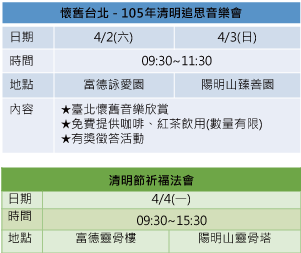

- ● 活動日期：3/19~4/5
- ● 活動說明：清明祭祀期間，分別於木柵富德靈骨樓及陽明山靈骨塔、陽明山臻愛樓等地區規劃祈福牆專區，提供民眾領取祈福卡書寫懸掛。
- ● 活動辦法：
- 1、於祈福卡書寫處領取卡片（每人每次限領一張）
- 2、將思念化做文字，以感念的心寫下您的祈福之語
- 3、將您的卡片懸掛於祈福牆串繩上
- 4、祈福卡將由主辦單位統一收集後焚燒
- ※ 祭拜須知
- 1、神明與祖先祭品請一併陳設於祭桌上。
- 2、請勿在祭拜區插香燃燭以保空氣清新。
- 3、香枝請勿插至金銀紙上以避免造成火災。
- 4、建議祭拜流程為30分鐘，逾時祭品移至暫放區（不負保管責任）
- 5、平常日如有紙錢，請送至辦公室集中代焚。
- 6、蓮花燈可替代燃燭，如有需要可向現場工作人員洽借。
- 7、富德靈骨樓及陽明山靈骨塔、臻愛樓皆設有自助式塔位查詢機，供民眾現場查詢使用。
